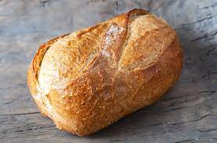

Sour Dough Bread

Description of the dish
Sour dough bread that takes time to prepare, but worth the wait!!
Ingrediants
- 1 cup sour-dough starter
- 1-1/2 cups warm water
- 1-1/2 teaspoons salt
- 1/2 cup white sugar
- 1/2 cup corn oil
- 6 cups bread flour
Steps
- Mix sugar, corn oil, salt, water, and 1 cup of sourdough starter together in a large bowl.
Sift the flour and add to the mixture. Grease or oil the dough.
Place the dough in an oiled bowl, cover, and let rise overnight.
- The next day, knead the dough for 10 minutes.
Divide in half, and place into two greased 4 x 8 inch bread pans. Allow the dough to double in size.
- Bake at 350 degrees F (175 degrees C) for 40 to 45 minutes, or until bread is golden brown and taps hollow.
Turn out to cool on wire racks.